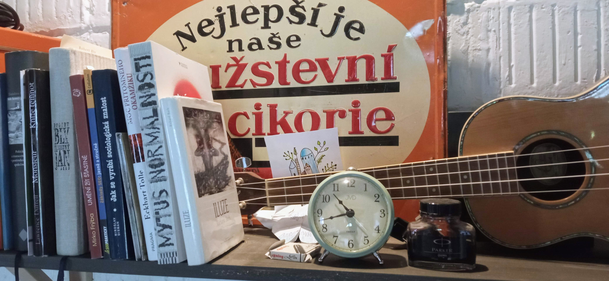

Pracovní místo a jednodušší zima
Někdy v koncem minulého roku se konečně podařilo vytvořit se jakž takž estetické pracovní místo.
Jako pracovní stůl používám starý "myčák" otočený tím šuplíkem ke zdi. Ve stole jsou dvě plechové vaničky, které jsme ještě před pár lety používali - neměli jsme tady kuchyň ani dřez. Má to tady ještě své mouchy, asi bych mě zapracovat na osvětlení a kamna jsou moc blízko, ale to snad vychytám.

Jinak loni jsem si tu dost stýskal nad těžkostmi zimního života na lontě. No a musím říct, že letos je trochu lepší. Dům už je přece jen lépe zateplený, kamna hřejí, jak mají, hodně se mi přes zimu dařilo cvičit. Začali jsme s Kapustňákem chodit na capoeiru a je to dobré. Úplně si vzpomínám, jak jsem před spoustou let začínal cvičit aikidó - prostě se snažíte něco dělat, ale vůbec vám to nejde :-). Ale od těch dob taky vím, že pokrok se prostě musí odpracovat a za rok to už bude o něčem jiném. Pokud si dobře vzpomínám, v aikidu jsem se začal "chytat" až tak po třech letech cvičení. Takže tak.
Dyť už děláš qi-gong, voe
Jo, to jo. Takže teď v pondělí Brazílie a ve čtvrtek Čína. A víte vy co? Docela dobře se to doplňuje. Je také dobré, že capoeira a qi-gong jsou natolik odlišné světy, že se to prostě nemotá. V qi-gongu se už počítám mezi trochu pokročilé, v caopeiře ještě dlouho budu jen kuře. Každopádně s láskou vzpomínám na tatami, před parketama v tělocvičně mám při cvičení capoeiry trochu respekt. Ale to se poddá. Asi, nejpíš...
Nasucho to de...
K lepšímu zvládání zimy přispěl i můj suchý leden a polosuchý únor. Prostě se snažím moc nepít alkohol a vyhýbat se těm drobným alkoholickým psychózám, kterými je populace v Česku prolezlá. A to neslo své ovoce v podobě lepšího spánku. No a ta zima zase nebyla moc tuhá, že jo... Každopádně nám zbude nějaké dřevo a snad i ušetříme nějakou tu megawatthodinu elektřiny.